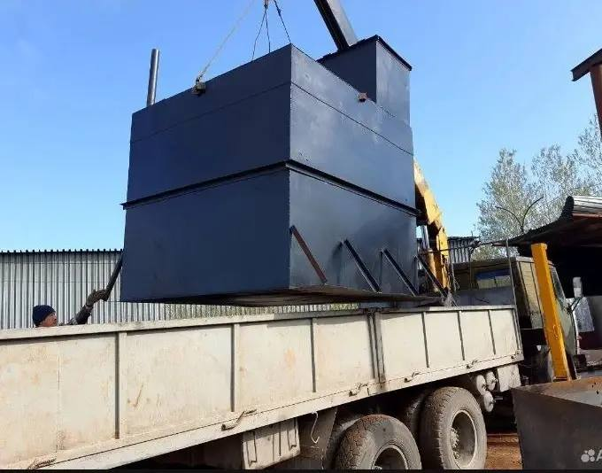
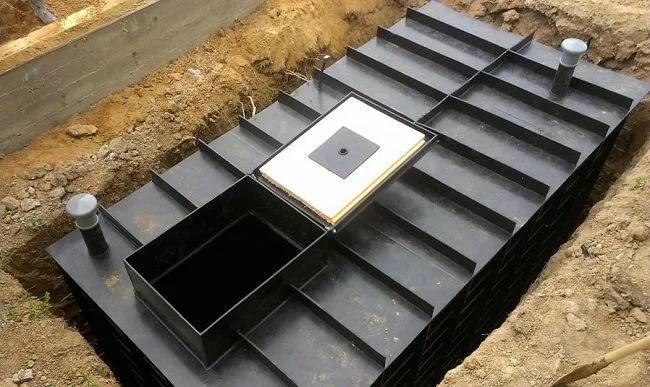
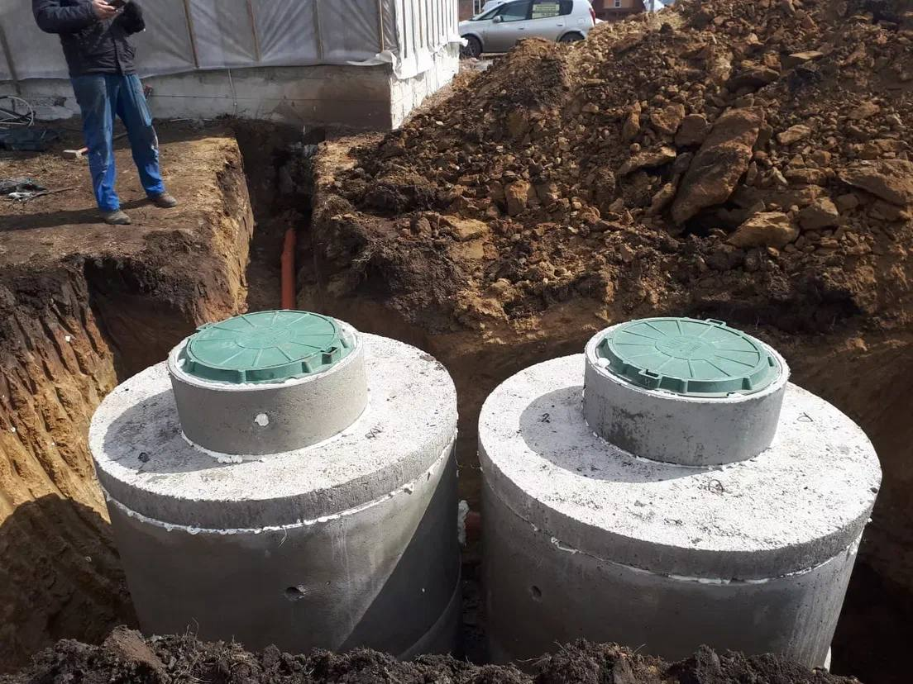

Рекомендуем
Септики из ЖБИ
от 75 000 ₽
Монтаж под ключ. Подбор объёма под дом, участок и количество проживающих.
Монтаж ЖБИ и металлических септиков с гарантией и фиксированной ценой
Рассчитать стоимостьМонтаж под ключ. Подбор объёма под дом, участок и количество проживающих.
• 5 м³ — 115 000 ₽
• 8 м³ — 130 000 ₽
• 10 м³ — 140 000 ₽
Заводское изготовление. Подходит для высокого уровня грунтовых вод.
💥 Цена актуальна до 30 км от города. За пределами — по договорённости.
📄 Работаем по договору, предоплата 50%.



Мы подберём оптимальный вариант и рассчитаем стоимость под ваш участок
Мы перезвоним в течение 15 минут
🔒 Данные не передаём третьим лицам
Выполняем монтаж септиков под ключ в Тюмени и Тюменской области. Устанавливаем септики из ЖБИ и металлические конструкции для частных домов, дач и коттеджей. Работаем по договору и предоставляем гарантию.
Подбор септика осуществляется с учётом количества проживающих, типа грунта и уровня грунтовых вод. Возможна установка на сложных участках.